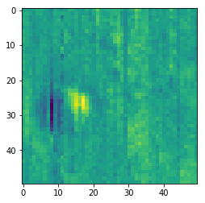
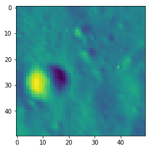

Table of Contents
Previous topic
Basic Derived Product Generation Through Built-in Methods
Next topic
This Page
Advanced Product Generation¶
Methods to generate a dervied m3 or crism product¶
- Calling the method on the read in data:
- data.derived_product()
- Passing the data to the derived product:
- derived_produc(data)
- Calling the derived_product_func and defining the bands to be used:
- derived_product_func(data.loc[[list_of_bands]])
- derived_product_func(data.loc[[list_of_bands], [list_of_y_values], [list_of_x_values]])
- Calling the generic_func and passing the associated parameters:
- generic_func(data, [wavelengths], func=derived_product_func)
For a more detailed understanding of this structure checkout the documentation.
data: Object read in via plio on either m3 or crism images
derived_product: Name of the derived product like tilt or
curvature
generic_func: Function that applies other functions to data
derived_product_func: Lower level function that performs the
mathematical operations on the bands
This notebook focuses on methods 3 and 4
Load the necessary modules¶
The functions to generate the derived products can be found in the
libpyhat library, while the data needs to be read in through plio. The
libpyhat functions can be applied in a variety of different ways
giving jupyter notebook users more leverage when generating derived
products.
To generate M3 products specifically we will need the M3 reader from
plio along with some functions from the libpyhat library.
In [1]:
# Uses any files found in the libpyhat example directory
# DO NOT use this for your own images
from libpyhat.examples import get_path
# Import the data reader from plio
from plio.io.io_moon_minerology_mapper import M3
# Setup some basic ploting
import matplotlib.pyplot as plt
%pylab inline
figsize(10,10)
Populating the interactive namespace from numpy and matplotlib
In [2]:
# Read the data in using the M3 object from plio
m3_data = M3(get_path("M3_4030seg_L2_aristcrater.tif"))
m3_data.wavelengths
Out[2]:
array([ 540.84, 580.76, 620.69, 660.61, 700.54, 730.48, 750.44,
770.4 , 790.37, 810.33, 830.29, 850.25, 870.21, 890.17,
910.14, 930.1 , 950.06, 970.02, 989.98, 1009.95, 1029.91,
1049.87, 1069.83, 1089.79, 1109.76, 1129.72, 1149.68, 1169.64,
1189.6 , 1209.57, 1229.53, 1249.49, 1269.45, 1289.41, 1309.38,
1329.34, 1349.3 , 1369.26, 1389.22, 1409.19, 1429.15, 1449.11,
1469.07, 1489.03, 1508.99, 1528.96, 1548.92, 1578.86, 1618.79,
1658.71, 1698.63, 1738.56, 1778.48, 1818.4 , 1858.33, 1898.25,
1938.18, 1978.1 , 2018.02, 2057.95, 2097.87, 2137.8 , 2177.72,
2217.64, 2257.57, 2297.49, 2337.42, 2377.34, 2417.26, 2457.19,
2497.11, 2537.03, 2576.96, 2616.88, 2656.81, 2696.73, 2736.65,
2776.58, 2816.5 , 2856.43, 2896.35, 2936.27, 2976.2 ])
Custom Wavelength Selection¶
Using custom indexing, specific wavelengths can be selected and used
in the various derived product functions.
Tilt by default uses 930 and 1009 but this can be changed to apply
tilt to which ever wavelengths necessary.
In [3]:
from libpyhat.derived.m3.supplemental_funcs import tilt_func
# Default
res = tilt_func(m3_data.loc[[930, 1009], :, :])
imshow(res)
show()
# Apply tilt to wavelengths 540 and 850
res = tilt_func(m3_data.loc[[540, 850], :, :])
imshow(res)
show()


Custom Wavelength Selection and Function Application Via generic_func¶
Similarly to the above example, generic_func allows users to select
both the wavelengths to apply a function to along with other
parameters like kernels, and if the wavelengths themselves should be
passed along to the function
Again, tilt by default uses 930 and 1009 but this can be changed to
apply tilt to which ever wavelengths necessary.
In [4]:
from libpyhat.derived.utils import generic_func
from libpyhat.derived.m3.supplemental_funcs import tilt_func
# Default
res = generic_func(m3_data, [930, 1009], func = tilt_func)
imshow(res)
show()
# Apply tilt to wavelengths 540 and 850
res = generic_func(m3_data, [540, 850], func = tilt_func)
imshow(res)
show()
# Apply tilt to wavelengths 540 and 850, and kernels
res = generic_func(m3_data, [540, 850], kernels = {540: 11, 850: 11}, func = tilt_func)
imshow(res)
show()


Custom Function with Wavelength Selection¶
Using the generic_func, users can also write their own functions and
apply them to some data set that has been read in.
Bellow we define a function called band_average. This function takes
in a list of bands and puts both bands into their own variable and
then gets the average between those two bands
In [5]:
def band_average(data):
band1, band2 = data
return (band1 + band2) / 2
In [6]:
# Showing the band1 we will be using
imshow(m3_data.loc[540])
show()
In [7]:
# Showing the band2 we will be using
imshow(m3_data.loc[2976])
show()

Applying Custom Functions¶
Now that we have defined the function we need to apply it using
generic_func. To do so, we need to define the wavelengths we want to
use then pass the function to generic_func.
In [8]:
# Get the result from generic_func
res = generic_func(m3_data, [540, 2976], func = band_average)
# Get the 0, 0 value from both band1 and band2
band1_val = m3_data.loc[540][0, 0]
band2_val = m3_data.loc[2976][0, 0]
# Check the result as if we applied the band_average function
# Against the result from generic_func
print((band1_val + band2_val) / 2)
print(res[0, 0])
print("Both should and are about the same if the band_average was applied correctly")
imshow(res)
show()
0.13185182213783264
0.13185182
Both should and are about the same if the band_average was applied correctly
In [ ]: